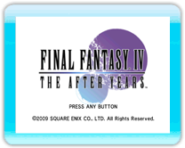
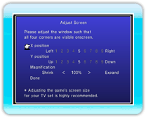

9 |
The Title Screen |
 |

Press any button on the Wii Remote (except HOME) on the title screen to bring up the title menu. Move the cursor using

● Adjust ScreenChange the "X / Y position" (left and right / up and down) and "Magnification" settings so that the four corners of the window displayed all fit inside the screen. Select "Done" once you're finished adjusting.
|

 |
 |
 |